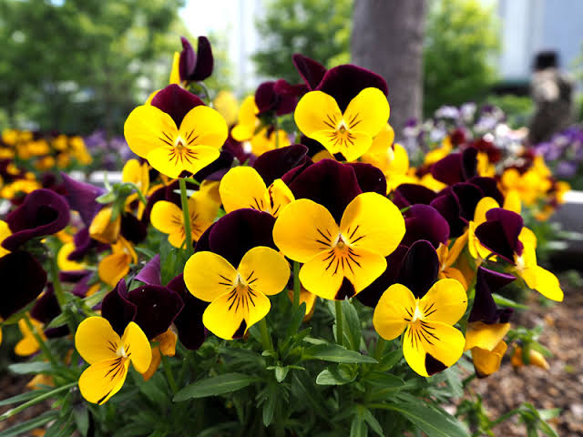
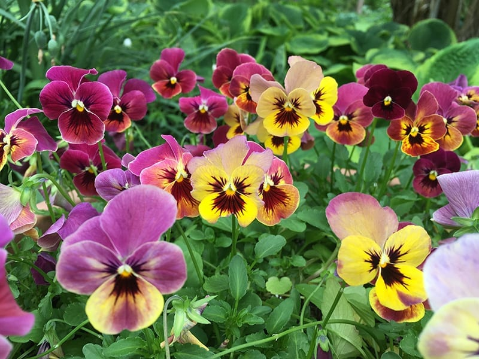
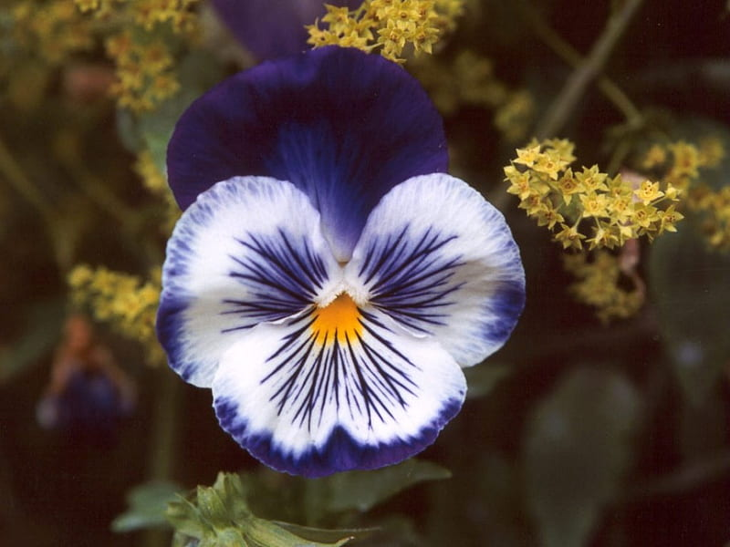
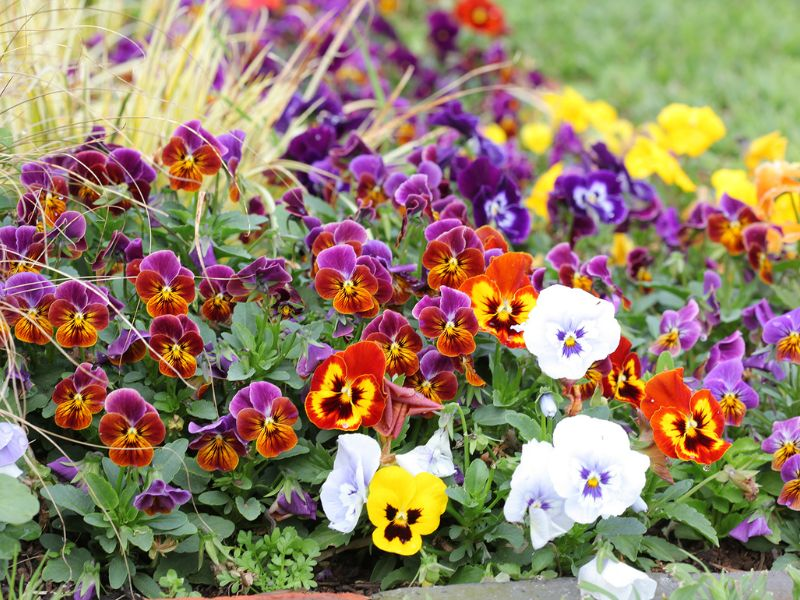

Meaning: You occupy my thoughts
Origin
The name “pansy” comes from the French pensée, meaning “thought.” In Shakespeare’s Hamlet, Ophelia remarks, “There’s pansies, that’s for thoughts,” while distributing flowers after the death of her father.
Gallery



